退出全屏

AI思维训练
Tian’s Island
分享小岛 ↗
全部作品
正在展开小岛…
也可以先点右上角查看全部作品
第一阶段 · 创作与探索
田田的创作小岛
从兴趣出发，让想法经得起探索与检验。
阶段回顾 ↗
JOJO带我逛逛
重置视角
落日时分
全部作品
←
选择作品
→
单指旋转小岛 · 双指缩放
回到小岛
分享作品
← 上一件
01 / 10
回到小岛
下一件 →
返回作品 ×
AI思维训练 · 第一阶段作品汇报
返回小岛 ×
田田的创作小岛
阶段回顾
从兴趣出发，让想法经得起探索与检验。
分享小岛
返回 ×
分享田田的创作
保存海报
复制链接